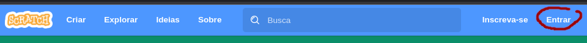
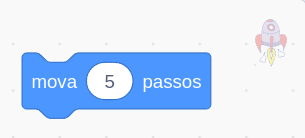

Sempre antes de começar a mexer no Scratch, faça login no Scratch, clicando em "Entrar" no canto superior direito.

Meteoros!
Na aula aprendemos um pouco sobre os diferentes tipos de blocos de loop que existem no Scratch e para quê eles servem.
Agora nós vamos continuar programando o nosso jogo "Meteoros!" e adicionaremos esses blocos.
Na primeira parte do jogo, fizemos o algoritmo que detecta quando um tiro da nave atingir o meteoro e o tiro causa uma explosão.
Atores
- Vamos adicionar o nosso nov personagem: "Rocket". Ele será a nossa nave.
- Mude o tamanho da nossa nave para ela ficar pequena, mas não tão pequena, porque ela precisa cobrir o nosso ator do "tiro".
Movimentando a nave
- A nave funcionará da seguinte maneira: ela ficará eternamente se movendo da direta para a esquerda no canto inferior da tela.
- Vimos na aula como fazer algo repetir um movimento para sempre. Como fazemos isso? Adicione esse bloco à nave embaixo de um bloco de "Quando a bandeira verde for clicada":
- Agora dentro do bloco de loop, adicione os blocos de movimento. Pronto, sua nave ficará eternamente se movendo. 
- Agora como mudamos a direção sempre que ele chegar na borda da tela?
- Se usarmos o bloco "se tocar na borda, volte", o nosso foguete vai subir caso toque na borda de baixo e não queremos isso.
- Por isso, a melhor solução é usar 2 blocos condicionais para detectar se a nave chegou na borda esquerda ou na borda direita.
Fazendo a nave disparar quando clicamos nela
- Para fazer a nave disparar o tiro quando clicamos nela, basta colocar este código na nave:
Sua tarefa (tiro seguir a nave)
- Agora que fizemos a nave se mover, quando você clica nela, você vai perceber que o tiro sai
daquele lugar que ele estava paradinho e não da nave.
Como fazemos para corrigir isso? Como fazemos para o tiro sair da nave? - Faça por conta própria um algoritmo no tiro para ele ficar sempre seguindo a nave.
Dica: envolve um bloco de loop. ;)
Seu jogo deve parecer algo assim no final desta tarefa: